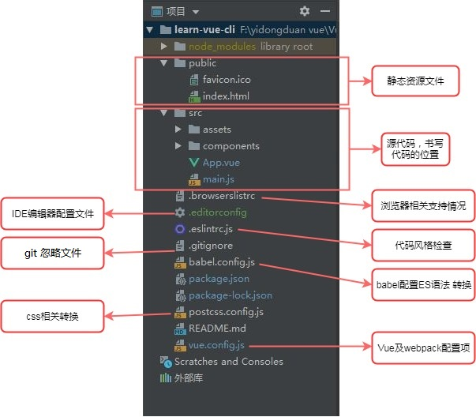

JQ基本
框架冲突解决
- noConflict
- 直接使用jQuery专属的名称 : console.log(jQuery("div"));
jQuery对象和DOM对象的相互转换
- DOM标签对象 -> jQuery实例对象 : $(DOM标签对象)
- jQuery实例对象 -> DOM标签对象 : jQuery对象.get(index) | jQuery对象[index]
jQuery文档加载
- $(document).ready(function(){})
- $().ready(function () {}）
- $(function () {})
JQ操作
jQuery操作html
- $("selector").html(value); 修改html （文本(包括标签符号) 括号里面加内容就是添加）
- $("selector").html(); 访问html
- $("selector").text(value); 修改文本内容
- $("selector").text(); 访问文本内容
jQuery操作css
- $("selector").css(name,value);
- $("selector").css(name1,value). css (name2,value) ...;
- $("selector").css( { name1 : value , name2 : value})
访问和修改元素属性
- $(selector).attr(name) : 访问指定属性的值
- $(selector).attr(name, "value") : 修改指定属性的值
- $(selector).attr({name:"value",name :"value",……}) : 多属性修改
坐标距离
- $(selector).offset().left : 元素在网页中的x坐标
- $(selector).offset().top : 元素在网页中的y坐标
- $(window).scrollTop() : 获取浏览器窗口卷去的距离
视频/音频API
- play() : 播放
- currentTime : 设置/返回当前时间 （可以设置开始播放时间）
each遍历
$(selector).each(function(index,ele){
//index索引值
//元素
});
$.each(arr/obj,function(index,ele){
//程序处理
});
清除字符串空格
$.trim(string) : 这个方法可以清除字符串前后的空格，注意中间的不能清除。
JQ选择器
$(selector).index() : 访问选中元素的索引值
- ID选择器 ： #id
- 类选择器 ： .class
- 标签选择器 ： element
- 通配符选择器 ： *
- 并集选择器 ： #id,.class
- 后代选择器 ： parent child ： $("div p")
- 直接后代选择器 ： parent>child
- 下一个相邻兄弟 ： prev+next
- 后面所有兄弟 ： prev~siblings
- next() ： 下一个相邻兄弟
- nextAll() ： 后面所有兄弟
- parent() 获取当前标签的父节点
- parents() ： 获取当前标签的祖先节点
- parentsUntil() ： 获取当前标签的祖先节点直到…
- children() ： 获取当前标签的子节点
- siblings() ： 获取除了当前标签之外的其他兄弟节点
- :first ： 获取第一个元素
- ID选择： #id
- :last ：获取最后一个元素
- :eq ： 获取指定索引值的元素
- :gt(index) ： 获取大于给定索引值的元素
- :lt(index) ： 获取小于给定索引值的元素
- :not(selector) ： 获取除给定选择器外的所有元素
- :header ： 获取所有标题类型的元素
- :animated ： 获取正在执行动画效果的元素
- :even ： 获取为偶数的元素，索引从0开始
- :odd ： 获取所有索引值为奇数的元素，索引从0开始
- :contains(text) 获取包含给定文本的元素
- :parent ： 获取含有子元素或者文本的元素
- :empty ： 获取所有不包含子元素或者文本的元素
- :has(selector) ： 获取含有选择器所匹配的元素
- [属性名] 获取包含给定属性的元素
- [属性名1] [属性名2] ： 获取满足多个条件的符合属性的元素
- [属性名='value'] ： 获取包含给定属性且等于指定值的元素
- [属性名!=value] ： 获取包含给定属性且值不等于给定值的元素
- [属性名^=value] ： 获取包含给定属性且值以指定字符开头的元素
- [属性名$=value] ： 获取包含给定属性且值以指定字符结尾的元素
- [属性名*=value] ： 获取包含给定属性且包含指定字符或子串的元素
- :first-child ： 获取每个元素下的第一个子元素
- :last-child ： 获取每个父元素下的最后一个子元素
- :only-child ： 获取每个父元素下的仅有一个子元素
- :nth-child(eq-index) ： 获取每个父元素下特定索引位置的元素 索引从0开始
- :visible 获取所有可见的元素
- :hidden ： 获取所有不可见元素，获取type为hidden的元素
- :enabled 获取表单中所有属性为可用的元素
- :disabled ： 获取表单中所有属性为不可用的元素
- :checked ： 获取表单中所有被选中的元素
- :selected ： 获取表单中所有被选中的option元素
- :file ： 获取所有的文件上传元素
- :image ： 获取所有的图片域
- :text ： 获取所有的单行文本域
- :reset ： 获取所有的重置按钮
- :radio ： 获取所有的单选按钮
- :button ： 获取所有的按钮
- :submit ： 获取所有的提交按钮
- :checkbox ： 获取所有的复选框
- :password ： 获取所有的密码框
- :input ： 获取所有的input、textarea、select元素
JQ事件
- 快捷方法绑定事件
- blur() 当元素失去焦点时发生 blur 事件
- change() ： 当元素的值发生改变时，会发生 change 事件
- click() ： 当点击元素时，会发生 click 事件
- dbclick() ： 当双击元素时，会发生 dblclick 事件
- error() ： 当元素遇到错误（没有正确载入）时，发生 error 事件
- focus() ： 当元素获得焦点时，发生 focus 事件
- focusin() ： 当元素获得焦点时，发生 focusin 事件(包括子元素)
- focusout() ： 当元素失去焦点时，发生 focusout事件(包括子元素)
- keydown() ： 当按键被按下时，发生 keydown 事件
- keyup() ： 当按键被松开时，发生 keyup 事件
- keydown() : 当按键被按下时，发生 keydown 事件
- keypress() : 当按键被按下时，发生 keypress事件（响应每个字符）
- mouseenter() : 当鼠标指针穿过元素时，会发生 mouseenter 事件
- mouseover() ： 当鼠标指针位于元素上方时，会发生 mouseover 事件
- mouseenter() ： 当鼠标指针穿过元素时，会发生 mouseenter 事件
- mouseout() ： 当鼠标指针从元素上移开时，会发生 mouseout 事件
- mousedown() ： 当鼠标进入元素，并按下按键时，会发生mousedown事件
- mouseup() ： 当在元素上放松鼠标按钮时，会发生 mouseup 事件
- mousemove() ： 当鼠标在指定的元素中移动时，会发生 mousemove 事件
- resize() ： 当调整浏览器窗口的大小时，发生 resize 事件
- scroll() ： 当用户滚动指定的元素时，会发生 scroll 事件
- select() ： 当文本被选择时，会发生 select 事件
- submit() ： 当提交表单时，会发生 submit 事件(表单)
- load() ： 当指定的元素（及子元素）已加载时，会发生load事件
- unload() ： 当用户离开页面时，会发生 unload 事件(1.8-)
绑定事件
- on（eventType,childselector,data,function）
- eventType：必传参数，指定事件的类型如click等。
- childselector：可选参数，用于事件委托。
- data：可选参数，设计需要传递的数据。
- function：必传参数，事件发生时，执行的函数。
- on可以用于自定义事件
- 对一个功能，做不同的处理，而且是对多个对象不同操作，可以通过自定义事件
- 给对象添加自定义事件 $('.box1').on(自定义事件名称,function(){}),这个指令中就是对当前对象的任何操作
- 自定义事件默认是不会执行的. 在最终的功能中让它执行即可. $(对象).trigger('自定义事件名称')
one方法 是on方法中的一种特殊使用方式，由one方法绑定的事件在执行一次响应之后就会失效。其设计思路是：在事件处理函数的内部注销当前事件
事件委托
- 动态添加的节点，不支持直接绑定事件，可以通过委托默认就存在网页文档中的标签为动态添加的标签绑定事件。
- 被委托的元素必须是委托元素的父级
- 被委托的元素必须默认就在网页当中
注销事件 off
//注销button标签上面的所有点击事件
$("button").off("click");
//注销button标签上面指定的鼠标移入事件,fn为绑定移入事件时的函数
$("button").off("mouseenter",fn);事件对象
- type ： 获取这个事件的事件类型，例如：click target
- target ： 获取绑定事件的DOM元素
- data ： 获取事件调用时的额外数据
- relatedTarget ： 获取移入移出目标点离开或进入的那个DOM元素
- currentTarget ： 获取冒泡前触发的DOM元素，等同于this
- pageX/pageY ： 获取相对于页面原点的水平/垂直坐标
- screenX/screenY ： 获取显示器屏幕位置的水平/垂直坐标（非jQuery)封装
- clientX/clientY ： 获取相对页面视口的水平/垂直坐标(非jQuery封装)
- result ： 获取上一个相同事件的返回值
- timeStamp ： 获取事件触发的时间戳
- which ： 获取鼠标的左中右键（1,2,3），或获取键盘按键
- altKey/shiftKey/ctrlKey/metaKey ： 获取是否按下了alt、shift、ctrl或meta键
键盘事件 : 事件对象e.keyCode可以获取对应按键的键码
阻止事件冒泡，默认行为
- 阻止事件冒泡
- 在回调函数中返回false。
- 调用事件对象的stopPropag
阻止默认行为 : 调用事件对象的preventDefault()
触发事件
- trigger(type,[data])
- triggerHandler(type,[data])
- triggerHandler方法不会触发标签的默认事件。
- triggerHandler方法只会触发jQ实例对象集合中第一个元素的事件回调。
- triggerHandler方法返回的是事件回调函数的返回值，而非jQ对象。
type参数表示事件的类型，以字符串的形式传递。
data参数是可选的，利用该参数可以向事件的回调函数传递额外的数据。
$(".box3").trigger("click");
$("input").triggerHandler("click");JQ动画
- show(speed,callBack) : 显示
- hide(speed,callBack) : 隐藏
- toggle() : 切换显示隐藏
- slideUp(speed，callBack) ： 收起
- slideDown(speed，callBack) ： 展开
- slideToggle(speed,callBack) ： 切换
第一个参数：动画执行的时间，同show方法。第二个参数：动画执行完毕的回调函数，可以省略，同show方法。
功能是设置让指定标签的高度变化，以呈现出一种动画效果,仅仅改变标签的高度，其他的属性并不会改变。
- hover([over,]out)
- over : 鼠标移到元素上要触发的函数
- out : 鼠标移出元素要触发的函数
hover事件参数是传两个function(){}，第一个函数在鼠标进入元素时触发，第二个函数在鼠标离开时触发，如果只传一个function,表示鼠标移上和离开都触发这个函数。
- fadeIn(speed，callBack)
- fadeOut(speed，callBack)
- fadeToggle(speed,callBack)
- fadeTo(speed,opactity，callBack)
通过改变选中标签的透明度来实现淡入和淡出的动画效果，并不修改其他的属性,改变display属性
- addClass() ： 添加类名 ； 同时增加两个类，用空格隔开
- removeClass() ： 删除类名 ； 如果没有指定删除的类名称，则删除所有类名
- toggleClass() ： 切换类名
自定义动画
animate(params,speed,easing,callBack)
- params ： 是一个对象,在该对象中以键值对的方式来要控制的属性样式和对应的值表示。
- speed ： 速度，“slow” 或“normal”或 “fast”或者是自定义的数字。
- easing ： linear和swing等固定值
- callBack ： 动画执行完毕后的回调函数。
动画停止
用户触发的动画一般会在动画函数的前面添加stop()方法去清空前面正在执行的动画，直接执行最后一个动画。
- 停止动画的语法为：stop（clearQueue,gotoEnd）
- learQueue为可选参数，传递一个布尔类型的值，表示是否停止正在执行的动画。
- gotoEnd也是可选参数,传递一个布尔类型的值，表示是否立即完成正在执行的动画。
动画延迟
delay(毫秒值) : 设置一个延时的值来推迟后续队列中动画的执行，可以传递延迟的具体时间，单位为毫秒。
JQ DOM节点操作
- append : 向每个匹配的元素内部追加内容。
- appendTo : 把所有匹配的元素追加到另一个指定的元素集合中，和append方法相反。
- prepend : 向每个匹配的元素内部前置内容。
- prependTo : 把所有匹配的元素前置到另一个指定的元素集合中，和append方法相反。
- after : 在每个匹配的元素之后插入内容。
- before : 在每个匹配的元素之前插入内容。
- insertAfter : 把所有匹配的元素插入到另一个指定的元素集合的后面。
- insertBefore : 把所有匹配的元素插入到另一个指定的元素集合的前面。
- remove : 将匹配的元素从DOM中删除。
- empty : 用来清空元素包含的内容，该方法没有参数。
- detach : 将匹配的元素从DOM中分离出来。
删除和清空是两个概念，清空操作执行后该标签还存在。
detach方法和remove方法差不多，但detach方法能够保存所有jQuery数据与被移走的元素相关联，所有绑定在元素上的事件、附加的数据等都会保存下来。如果您在移走一个元素不久后，又需要将该元素重新插入DOM，那么推荐使用detach方法。
-
jQ.clone（[widthDataAndEvents]，[deepWithDataAndEvents]）
clone方法的两个参数都是可选的布尔值，如果不传递则默认全部为false。widthDataAndEvents参数表示是否复制该节点的事件处理数据。deepWithDataAndEvents参数表示是否复制子元素的事件处理数据。 -
jQ.replaceWith（newContent）
replaceWith方法能够将所有匹配的元素都替换成指定的HTML或者是DOM元素。（括号里为要新替换的元素） -
jQ.replaceAll(selector)
replaceAll方法和replaceWith是一对相反的操作。（括号里为原先的元素）
Vue 基本
- el绑定的元素不可以是body或者html
- vue中的数据要放在生成实例的参数选项的data对象中。data中的数据不仅仅是字符串，也可以是对象或者数组。
- 使用数据时，直接书写{{数据名称}}，{{}}语法是插值，又称mustache语法[ˈmʌstæʃ]。本义 胡须。
插值语法，其实就是{{}}内部可以书写js的简单操作，其实也就是相当于js的表达式。加减乘除，数组操作，函数执行等。
- computed和data和methods中的key都不能相同
- computed会将当前的计算结果保存一下,如果里面的数据发生改变,重新执行并且再次保存最新结果.methods中的函数作为计算，会不断执行。
- computed和watch都有监听的意思，只不过watch是监听已经存在数据，而computed是为了监听，当前创建的数据，而这个数据在data中不存在，当修改了当前创建的数据，会执行set方法
Vue 指令
指令是书写在html标签身上的功能。是Vue框架赋予了这个属性的一些功能。
- v-model ： 是vue针对表单元素和vue的数据做的一层特殊处理
- 修饰符：
- number ： 强制修改成为数字。
- trim ： 去除两端空格。
- lazy ： v-model 在每次 input 事件触发后将输入框的值与数据进行同步，lazy 修饰符使其转变为使用 change 事件进行同步。
- v-html / v-text ： 书写在标签属性上，当网络不友好时，也不显示其它字符，等全部加载完，再显示到页面中。v-html ： 值包含标签； v-text ： 值为简单数据
- v-cloak ： 可以让书写vue代码的部分全部隐藏。等Vue代码加载和编译完全，会让其显示出来。
写的时候要加上<style> [v-cloak]{display: none;} </style>
- v-if : 用于条件性地渲染一块内容。这块内容只会在指令的表达式返回 truthy 值的时候被渲染。false的话元素不会在文档出现
- v-show : v-show ='布尔值' ： 元素切换显示/隐藏 ; v-show 指令当值为true则为显示，值为 false 则为隐藏。
- 绑定事件 ： 直接将事件书写在模板中 v-on:click="指令名称()" 或者简写为 @click="指令名称()"
- v-for ： 用 v-for 指令根据一组数组的选项列表进行渲染。 v-for 指令需要使用 item in items 形式 的特殊语法， items 是源数据数组并且 item 是数组元素迭代的别名。
如果希望使用索引值那么提供了 (item,index) in items 第一项为数组元素的别名，第二项为索引值，不可以交换位置
也可以用 v-for 通过一个对象的属性来迭代。value , key , index 第一个是对应的值，第二个是属性名称，第三个是索引。注意这里面的渲染的结果并不一定会按照对象的属性先后显示。
代码 - v-bind : (可以简写为 ： )对标签的属性可以绑定数据;操作元素的类名或者内联样式，是一个常见的需求。可以结合表达式，进行字符串拼接即可。
我们可以通过 v-bind 处理 class 和 style 。可以是字符串，也可以是对象(例如：v-bind:style="{k:v,k:v}")或者数组（例如 ： v-bind:class=“[数据1，数据2]”）。
自定义指令
- 一个指令定义对象可以提供如下几个钩子函数:
- inserted：被绑定元素插入父节点时调用 (仅保证父节点存在，但不一定已被插入文档中)。
- update：所在组件的 VNode 更新时调用
- 钩子函数的参数：
- el：指令所绑定的元素，可以用来直接操作 DOM 。
- binding：一个对象，包含以下属性：
- value：指令的绑定值，例如：v-my-directive="1 + 1" 中，绑定值为 2。
Vue 组件
- 必须先注册才能使用。而且注册要写在实例之前。否则也不能生效。
- 注册中的模板必须要有一个根节点，不可以全部同级
- 组件内部还可以去使用其它组件
- 组件名称不可以使用浏览器支持的标签。如：div,article……
- 组件名称大小写 kebab-case(肉串/烤串)写法或者 PascalCase(大驼峰)写法 组件使用时都是用kebab-case(肉串/烤串)写法
- 组件不可以直接访问实例数据
- 父子组件，定义注册组件为子组件，使用组件为父组件
- 实例中的template和el结合会把el的绑定的元素用template替换掉
组件私有数据
- 组件数据的存放
- 组件对象也有一个data属性
- 只是这个data属性必须是一个函数,原因是在于Vue让每个组件对象都返回一个新的对象，因为如果是同一个对象的，组件在多次使用后会相互影响。
- 而且这个函数返回一个对象，对象内部保存着数据
组件通信
- 通过给父组件添加自定义属性
- 子组件中通过props接收父组件的自定义属性
- 在模板中通过{{自定义属性名称}}来显示数据
props数据验证 : 支持String、Number、Boolean、Array、Object、Date、Function、Symbol（注意首字母要大写，且不加引号）
- 父组件通过v-on:自定义类型=”函数“
- 子组件通过this.$emit(自定义事件名称)
组件循环
我们需要在对组件循环时，添加一个属性key且key值为字符串或者数字，且key值不可以重复
Vue生命周期
什么是生命周期：从Vue实例创建、运行、到销毁期间，总是伴随着各种各样的事件，这些事件，统称为生命周期！
实例和组件生命周期
生命周期钩子：就是生命周期事件的别名而已；
生命周期钩子 = 生命周期函数 = 生命周期事件
- 1、初始
- beforeCreate : 实例刚在内存中被创建出来，此时，还没有初始化好 data 和 methods 属性
- created ： 实例已经在内存中创建OK，此时 data 和 methods已经创建OK，此时还没有开始编译模板
- 2、挂载
- beforeMount ： 此时已经完成了模板的编译，但是还没有挂载到页面中
- mounted ： 此时，已经将编译好的模板，挂载到了页面指定的容器中显示
- 3、更新
- beforeUpdate ： 状态更新之前执行此函数， 此时 data 中的状态值是最新的，但是界面上显示的 数据还是旧的，因为此时还没有开始重新渲染DOM节点
- updated ： 实例更新完毕之后调用此函数，此时 data 中的状态值 和 界面上显示的数据，都已经完成了更新，界面已经被重新渲染好了！
- 4、销毁
- beforeDestroy ： 实例销毁之前调用。在这一步，实例仍然完全可用。
- destroyed ： Vue 实例销毁后调用。调用后，Vue 实例指示的所有东西都会解绑定，所有的事件监听器会被移除，所有的子实例也会被销毁。
- 5、在keep-alive组件中才能生效的生命周期
- activated ： keep-alive 组件激活时调用。
- deactivated ： keep-alive 组件停用时调用
- 可以进行AJAX操作的生命周期有created、beforeUpdate这两个生命周期。一般用created
- mounted : 用来操作元素的 之前都不可以操作元素.之后都可以操作元素.
- this.$el 可以获取到Vue 实例使用的根 DOM 元素。可能会显示到页面中，也可能还没有显示到页面中。在mounted之前是不会显示到页面中的。
- 实例被销毁，是要通过vm.$destroy()调用才可以。不过，它只不过是实例销毁，反应销毁，数据销毁，但是显示到页面中的元素，还依然存在。不过尽可能的不要通过vm.$destroy()方法来销毁。
- 在created、beforeMount、mounted、beforeUpdate和updated是可以对data中数据进行修改。而销毁阶段的生命周期中对数据的修改是不会生效的。
Vue-router
vue使用路由
- 引入vue-router.js
- 定义路由
- 跳转链接<router-link to="/home">首页</router-link>
- 显示位置<router-view />
router-link组件是为了具体跳转到哪个路由属性有totag 等。to 就相当于具体跳转到哪个路由。 默认router-link组件呈现在浏览器上是 a 标签；如果通过 tag="span" 那么它最终是以定义的span元素进行呈现，而且也能跳转。
router-view 组件是让最终跳转的路由 path 对应的组件显示的位置。可以称之为占位路由切换时，切换的是 router-view 挂载的组件，其他内容不会发生改变。
让路径默认跳到到首页, 并且渲染首页组件
{path:'/',redirect:'/home'}在routes中配置了一个映射,path配置的是根路径: / ;redirect是重定向, 也就是我们将根路径重定向到/home的路径下
vue-cli结合vue-router
- 导入路由对象，并且调用 Vue.use(VueRouter)
- 创建路由实例，并且传入路由映射配置
- 在Vue实例中挂载创建的路由实例
- linkActiveClass : 在path匹配下才会出现的类名（包含）
- linkExactActiveClass : 只是在path精准匹配下才会出现的类名
编程式的导航
除了使用router-link创建 a 标签来定义导航链接，我们还可以借助 router 的实例方法(即JS)，通过编写代码来实现。
动态路由
{path: '/news/:id', name: 'news', component: News} , 在router-link跳转时给id赋值为123 ; 进入组件中通过this.$route.params.id 来取取数据123。
路由懒加载
const Home = () => import(/* webpackChunkName:"kk"(js文件名) */ '../components/Home.vue')嵌套路由
嵌套路由也可以配置默认的路径, 配置方式如下:
children: [
{path:'',redirect:'message'},
{path: 'message', name: 'message', component: () => {
return import('../pages/home/Message')}},
{path: 'user', name: 'user', component: () => {
return import('../pages/home/User')}}
]Vue 综合案例
git
常用Bash命令介绍
- pwd （Print Working Directory）： 查看当前目录
- cd （Change Directory） ： 切换目录
- cd 目录 ： 进入到指定目录
- cd ../ ： 返回上一层目录
- ls （List） ： 查看当前目录下内容
- 参数: usage: ls [-ABCFGHLOPRSTUWabcdefghikl] [file ...]
- ls ： 列出当前目录下面的所有文件
- ls -a ： 列出当前目录下面的所有文件(包含隐藏文件)
- ls -1 ： 列出当前目录下面的所有文件(列表方式)，包含文件的创建者和时间等信息
- ls -s ： 列出当前目录下面的所有文件(打印文件的大小)
- ls -t ： 列出当前目录下面的所有文件(按照时间来排序)
- ls -S ： 列出当前目录下面的所有文件(包括子目录递归) ； win10 powershell命令行有效 Bash无效 ；也可以组合使用比如 ls -al
- mkdir（Make Directory） ： 创建目录
- 参数 : usage : mkdir [-pv] [-m mode] directory 示例：
- mkdir Demo ： 创建Demo文件夹(目录)
- mkdir -v demo ： 创建demo文件夹并输出提示信息
- mkdir -p test/sub1 ： 创建tst文件夹并在该目录中创建sub1文件夹
- rmdir （Remove Directory） ： 删除文件夹，只能删除空文件夹，不常用
rmdir a ： 删除文件夹a
- touch ： 创建文件 ； touch index.html ： 在当前目录中创建index.html文件
- wc（Word Count） ： 获取文件的字数信息统计
- 参数 ： usage : wc [-clmw] [file]
- wc a.txt ： 获取a.txt文件的字数统计信息
- wc -c a.txt ： 获取a.txt文件的字数统计信息(统计字节数)
- wc -l a.txt : 获取a.text文件的字数统计信息(统计行数，从0开始计数)
- wc -m a.txt : 获取a.text文件的字符数统计信息(统计字符数)
- wc -w a.txt : 获取a.text文件的字数统计信息(统计单词数) 行数从0开始依次为行数 单词数量 字符数不常用。
- echo : 输出字符串。
- echo “123＂ >> a.txt : 向a.txt文件中输入123字符串(替换)
- echo ＂123＂ >> a.txt : 向a.txt文件中输入123字符串(追加) 命令行中间的空格不可以忽略。
- cat : 查看|创建|合并文件
- cat [Concatenate files and print on the standard output]
- cat a.txt : 就是查看 a.txt文件的内容
- cat -n a.txt : 查看 a.txt文件的内容 并附带行号
- cat > b.txt : 新建b.txt并且手动输入内容，再换行（windows），可以通过ctrl+c中止并且保存
- cat a.txt b.txt > c.txt ： 合并两件文件的内容给c.txt文件。
- cat -b a.txt ： 输入a.txt文件的内容并显示行号（空行不被编号 ）
- cat -n b.txt >> a.txt ： 对b.txt文件的内容加上行号（结果）然后追加到a.txt文件中
- cat -n b.txt > a.txt ： 对b.txt文件的内容加上行号然后替换到a.txt文件中
- rm（remove） ： 删除文件 Recurve(递归)
- usage: rm [-f | i] [-dPRrww] file
- rm a.txt ： 删除a.txt文件
- rm -i a.txt ： 删除文件前会逐一询问确认，输入YES表示删除
- rm -f a.txt ： 强制删除a.txt文件不会询问确认
- rm -r test ： 删除test文件夹以及该目录下面所有文件
- rm -r ： 删除当前目录下面所有的文件
- rm -rf ： ＊递归删除所有文件(不提醒)
- rm -ri test ： 带提示的递归删除
- mv （move） ： 移动文件或重命名
- mv index.html ./demo/index.html
- mv index.html a.html
- cp （copy） ： 复制文件
cp index.html ./demo/index.html
- history : 看操作历史。
- curl : 发送网络请求。 curl 网址。
- who am i : 查看当前用户信息。
- tab : 自动补全，连按两次会将所有匹配内容显示出来。
- cls、clear : 清屏。
- vi : 输入内容。 vi 文件名称 ： 会进入到 输入界面
- 注意：
- 想要输入内容必须,先按下 i 键。
- 想要退出和保存 : 先按下esc 取消,再输入:wq!
- 不想保存退出 : 先按下esc 再输入 :q!
- !表示强制执行。
-
jQ.clone（[widthDataAndEvents]，[deepWithDataAndEvents]）
clone方法的两个参数都是可选的布尔值，如果不传递则默认全部为false。widthDataAndEvents参数表示是否复制该节点的事件处理数据。deepWithDataAndEvents参数表示是否复制子元素的事件处理数据。 -
jQ.replaceWith（newContent）
replaceWith方法能够将所有匹配的元素都替换成指定的HTML或者是DOM元素。（括号里为要新替换的元素） -
jQ.replaceAll(selector)
replaceAll方法和replaceWith是一对相反的操作。（括号里为原先的元素）
源代码管理工具GIT
- 初始git仓库 : git init
- 配置用户 :
git config user.name "yanming"
git config user.email "zhaoyanmingfei@qq.com"
- 配置全局用户
git config --global user.name "yanmingfei"
git config --global user.email "656610337@qq.com"
本地仓库在我们书写代码的地方称之为工作区。工作区的文件默认是不会被管理的。而在.git文件中称之为仓库也叫做版本库，会为我们划分两块区域。这两个区域称之为 暂存区（暂缓区）和历史记录区
书写项目 单文件
- 新建index.html ： touch index.html
- git status ： 查看状态
- git add index.html 提交到本地暂存区 ； 或者觉得麻烦可以直接将改变的文件全部提交 git add .
发现提交后，变成绿色的。已经被它管理了。这时版本库中的暂存区内部就会和工作区保持一致。可以在 .git文件夹中发现多了一个文件index。注意和index.html 的名字是无关的。比如你创建的是a.txt。那么它提交后也会出现这个index。
- git commit -m "创建的index.html" 提交代码进入到仓库
发现再次输入git status已经没有任何提示。此时暂存区内部内容已经被存放在历史记录区。暂存区就没有信息了。
- git log | git reflog ：提交记录 ； git log ： 记录信息比较全。 git reflog ： 简写的信息。
- git reset --hard 版本记录值（哈希值） ： 版本回退。
例如 ： git reset --hard 0a88110234f9a3070b212a7 fd75e52741c947ada （大于七位就行）
回退后再查看git记录git log的方式会发现，变的很少。而通过git reflog的方式。会记录的更全，版本回退的信息也记录下来。
分支
- 查看分支 : git branch 默认分支的名称就是master 主分支
- 创建分支 : git branch 分支名称 (此时分支还是在master主分支上)
- 切换分支 : git checkout 分支名称
- 合并分支 :
先切换回主分支 : git checkout master
合并分支 : git merge 分支名称
- 删除分支 : git branch -d 分支名称
- 创建并切换到分支 : git checkout -b 名称
多人开发
- git init --bare : 创建远程仓库 ; 例如将GITDEMO文件夹作为远程仓库
- git clone ../GITDEMO （仓库地址）. → 成员克隆仓库 (加点表示把仓库直接放到当前文件目录 ,不加表示，创建仓库名称 文件夹，并且 在文件夹中放仓库)
- git push ： 提交到远程库
- git pull ： 更新获取最新的仓库信息
如果出现拉取失败，强制拉取 ： git pull -allow-unrelated-histories
其他操作
- 撤销修改
- （工作区改错了，想把暂存区的东西恢复到工作区）→ git checkout -- .
- （工作区改错了，并且也添加到了暂存区。希望最新的一次历史版本恢复到暂存区） → git reset HEAD .
- （已经提交了不合适的版本库，想要撤销提交。就是回退） → git reset --hard hash
忽略特殊文件(不想提交的文件：.idea目录等等) : 在Git工作区的根目录下创建一个特殊的.gitignore文件，然后把要忽略的文件名填进去，Git就会自动忽略这些文件。（.gitignore文件也会提交到git上。）
标签
- 创建标签 : git tag v1.0
- 查看标签 : git tag
- 对历史的commit进行打标签 : git tag v0.9 hash值
还可以创建带有说明的标签，用-a指定标签名，-m指定说明文字：git tag -a v0.1 -m "version 0.1 released" 1094a
- 查看tag详细信息 : git show v0.1
- 删除本地标签 : git tag -d v0.1
- 上传标签 : git push origin v1.0 或者 git push origin --tags
- 删除远程标签 :
先从本地删除 ： git tag -d v0.9
然后，从远程删除 : git push origin :refs/tags/<tagname>
自动化构建工具gulp
- 代码转换：将 TypeScript 编译成JavaScript、将 SCSS 编译成 CSS等。
- 文件优化：压缩JavaScript、CSS、HTML 代码，压缩合并图片等。
- 代码分割：提取多个页面的公共代码，提取首屏不需要执行部分代码让其异步加载。
- 模块合并：在采用模块化的项目里会有很多个模块和文件，需要通过构建功能将模块分类合并成一个文件。
- 自动刷新：监听本地源代码变化，自动重新构建、刷新浏览器。
- 代码校验：在代码被提交到仓库前需要校验代码是否符合规范，以及单元测试是否通过。
- 自动发布：更新代码后，自动构建出线上发布代码并传输给发布系统。
构建其实是工程化、自动化思想在前端开发中的体现，将一系列流程用代码去实现，让代码自动化地执行这一系列复杂的流程。构建为前端开发注入了更大的活力，解放了我们的生产力。
gulp中文网站- Gulp 是一个基于流的自动化构建工具。除了可以管理任务和执行任务，还支持监听文件、读写文件。Gulp 被设计的非常简单，只通过下面5个方法就可以支持几乎所有构建场景：
- 通过 gulp.task 注册一个任务；
- 通过 gulp.src 读取文件；
- 通过 gulp.dest 写入文件。
- 通过 gulp.watch 监听文件变化；
- 通过 gulp.run 执行任务； Gulp 最大的特点是引入了流的概念，同时提供了一系列常用插件去处理流，流可以在插件之间传递。
gulp构建项目
- build ： 是项目的运行时目录，编译后自动生成
- dist ： 是项目的发布的目录，编译后自动生成
- node_modules ： 是项目开发时依赖的库，比如：less编译插件, js 和并插件等（不用打包到项目）node环境依赖
- bower_components ：是项目发布时的依赖库，比如:angular , jquery 库 （ 要打包到项目 ） 项目库jquery bootstrap
- src ： 是源代码存放目录，编写代码，编写好之后需要编译
- gulpfile.js ： gulp的配置文件，就是让咱们的src目录的源代码按照我们的意愿去执行。
webpack
Webpack 是一个现代 JavaScript 应用程序的静态模块打包器（static module bundler）。在 Webpack 处理应用程序时，它会在内部创建一个依赖图（dependency graph），用于映射到项目需要的每个模块，然后将所有这些依赖生成到一个或多个 bundle。
webpack 是从入口文件开始，经过模块依赖加载、分析和打包三个流程完成项目的构建。
初始化
npm init -y 后的package.json文件中
- dependencies为项目的依赖在通过npm install XXX -S或者npm install yyy --save会将xxx及版本号显示在这个位置（项目中需要的）
- devdependencies为开发环境依赖通过npm install yyy -D或者npm install yyy --dev-save（开发中需要的）
创建src/main.js和src/index.html
安装jquery （项目中需要使用）
npm install jquery -S在main.js中导入jq并且书写文件
import $ from "jquery"
$("ul li:even").css({background:'red'})
$("ul li:odd").css({background:'pink'})执行下面命令将main.js打包可用的js
webpack src/main.js -o dist/bundle.js然后将打包后的bundle.js引入index.html中即可得到想要的效果
dist
| ├─bundle.js
src
| ├─main.js
| ├─index.html
package.json- dist文件夹 ：用于存放之后打包的文件
- src文件夹 ：用于存放我们写的源文件
- main.js ：项目的入口文件。具体内容查看下面详情。
- index.html ：浏览器打开展示的首页html
- package.json ：通过npm init生成的，npm包管理的文件
webpack结合npm scripts
安装本地项目依赖
npm install webpack webpack-cli -D结合npm scripts来方便我们书写命令，修改package.json文件
启动命令：npm start 或者npm run start（start是在scripts中定义的key值。）（start这个命令可以省去run其它都不可以）
启动后报错：原因是没指定环境：production（生产环境）或者development 开发环境，将命令改为
webpack src/main.js -o dist/bundle.js --mode developmentwebpack配置文件
在项目根目录上新建webpack.config.js
相应的npm scripts也要做一些修改"start": "webpack --config webpack.config.js"或者"start": "webpack"
"scripts": {
"start": "webpack --config webpack.config.js"
},webpack-dev-server
安装npm install webpack-dev-server -D 可自动打包文件
修改npm scripts
"start": "webpack-dev-server --config webpack.config.js --open --port 8888 --hot"- --open 自动打开浏览器 相当于 --open true
- --port 打开的服务端口号 8888 --port 8888
- --hot 自动更新 --hot true
执行npm start后，它会将打包的信息全部放在缓存（内存）中，我们是看不到的（并不会在我们本地去创建一个dist/bundle.js），通过http://localhost:8888/bundle.js可以看到打包的文件
安装npm install html-webpack-plugin -D 插件 可以自动将模板index.html和bunddle.js文件结合
除js外的其它模块
在main.js项目入口文件 通过 import './index.css';导入我们创建的css
然后通过loader加载器将.css文件进行解释成正确的模块
安装 npm install css-loader -D
安装npm install style-loader -D
配置webpack.config.js ; {test:/\.css$/,use:['style-loader','css-loader']}
css-loader 是将index.css正确解释 为webpack的模块，进行打包到了bundle.js，我们可以佐证，但是该样式并未成功的显示到浏览器中。style-loader的作用其实就是将打包到bundle.js中的css样式输出到浏览器中，以style标签的形式显示。
安装npm install less-loader less -D
配置：{test:/\.less$/,use:['style-loader','css-loader','less-loader']}
安装npm install sass-loader node-sass -D
配置：{test:/\.scss$/,use:['style-loader','css-loader','sass-loader']}
安装npm install url -D
配置：{test:/\.(jpg|jpeg|gif|png|webp)$/,use:['url-loader']},
这样网页的图片都是以base64进行编码；图片不再像以前通过外链的形式打开，而是内嵌在网页上了，图片越大base64的编码信息越多。
一般让小图片使用base64进行加载，这样既能让图片快速加载，又会减少http请求。至于大图片一般就直接以往常的外链形式存在即可。
安装 npm install file-loader -D（文件加载器）
修改loader配置项,limit表示小于后面的1000 byte即接近1kb，用base64显示。超过的限制的话通过外链来读取图片
{
test: /\.(jpg|jpeg|gif|png|webp)$/, use: [{
loader: 'url-loader',
options:{
limit:1000,
name:'[name].[hash:8].[ext]'
}
}]
},安装
npm install babel-core babel-loader@7.1.5 babel-plugin-transform-runtime babel-preset-env babel-preset-stage-0 -D配置loader ： {test:/\.js/,use:['babel-loader'],exclude:[/node_modules/,/dist/]}
exclude表示排除掉 node_modules下载的依赖项和dist。这样可以加速网站开发，而且我们也只需要对我们的项目src源文件进行编译即可。
新增.babelrc文件
{
"presets":[“env","stage-0"],
"plugins":["transform-runtime"]
}Vue结合Webpack
开发中会采用Vue组件化开发的方式，而且每个组件都是一个单文件形式后缀名为(.vue)。
Vue组件安装
npm install -D vue-loader vue-template-compiler vue-style-loaderVue Loader 的配置和其它的 loader 不太一样。除了通过一条规则将vue-loader应用到所有扩展名为.vue的文件上之外，请确保在你的 webpack 配置中添加 Vue Loader 的插件：
const VueLoaderPlugin = require('vue-loader/lib/plugin')
plugins: [ new VueLoaderPlugin() ]Vue不同版本构建
new Vue({
template: '{{ hi }}'
})
module.exports = {
// ...
resolve: {
alias: {
//别名
'vue$': 'vue/dist/vue.esm.js'
}
}
}new Vue({
render (h) {
return h('div', this.hi)
}
})Vue-cli脚手架
npm install -g @vue/cli
# OR
yarn global add @vue/cli创建项目
vue create hello-world(项目名)也可以通过vue ui命令以图形化界面创建和管理项目
Vue-cli 项目结构
自行添加一个IDE配置文件.editorconfig，这个文件对不同的IDE编辑器可以做到代码风格统一
root = true
[*]
charset = utf-8
indent_style = space
indent_size = 2
end_of_line = lf
insert_final_newline = true
trim_trailing_whitespace = true- root=true : 对所有文件生效
- end_of_line= lf : 不同操作系统换行符不同
- insert_final_newline = true : 代码最后新增一行
- trim_trailing_whitespace = true : 修剪尾随空格
借助 ESLint，可将 静态代码分析 和 问题代码协助修复 集成到 编码、提交 和 打包 过程中，及早发现并协助修复代码中
有些针对 @vue/cli 的全局配置，例如你惯用的包管理器和你本地保存的 preset，都保存在 home 目录下一个名叫 .vuerc 的 JSON 文件。
可以使用 vue config 命令来审查或修改全局的 CLI 配置。
样式转换配置
module.exports = {
plugins: {
autoprefixer: {}
}
}其他框架
Bootstrap
Bootstrap官网 BootStrap中文网bootstrap栅格系统
栅格的重点在于在排版上更好的进行适配，在不同的分辨率下能够显示显示不同的效果。将所有分辨率下的网页水平方向分成12列，那么在不同的分辨率下，水平方向显示不同的列数进而达到适配。
container（包括 container-fluid ）、row、column必须保持特定的层级关系，栅格系统才可以正常工作（版心>行>列） 重点：先有行，再有列
- col-xs-[列数]：在超小屏幕下展示几份
- col-sm-[列数]：在小屏幕下展示几份
- col-md-[列数]：在中等屏幕下展示几份
- col-lg-[列数]：在大屏幕下展示几份
- __xs__ : 超小屏幕 手机 (<768px)
- __sm__ : 小屏幕 平板 (≥768px)
- __md__ : 中等屏幕 桌面显示器 (≥992px)
- __lg__ : 大屏幕 大桌面显示器 (≥1200px)
- 列偏移 ： .col--offset- 一个栅格向右边偏移多少个列
- 列顺序 ： 使用 .col- * -push- * 和 .col- * -pull-* 类可以改变列（column）的顺序（注意要结合使用）
.col- * -push- * 往右推 ； .col- * -pull-* 往右拉
animate.css框架
animate.css- 引入下载好的animate.css文件
- 给要做动画的元素添加类名 ： 要添加两个类名，分别是： animated(控制时间) ； 要添加的动画效果类名（控制效果）
wow.js框架
wow.jswow.js是做网页滚动动画的js框架，配合animate.css使用，可以在网页滚动的过程中释放animate.css动画效果。
- 引入animate.css文件和wow.js文件
- html结构 ： 在要做滚动动画的元素身上添加类名；wow(声明元素使用混动动画) ； 动画名称（滚动释放的动画名称）
<div class="left wow slideInLeft"></div>js调用（调用前注意要先代码分离） :
new WOW().init();- 属性设置
- data-wow-duration ： 动画持续时间，以秒/s为单位
- data-wow-delay ： 动画延时时间，以秒/s为单位
- data-wow-iteration ： 动画播放次数，值是纯数字，infinite表示循环播放
- data-wow-offset ： 元素顶部偏离可视区（容器）底部动画出现的距离（用于设置动画在页面的出场位置）
带参数的调用方法
var wow = new WOW({
boxClass: 'wow', //动画元素的CSS类 (默认类名 wow)
animateClass: 'animated', //动画CSS类 (默认类名 animated)
offset: 0, //距离可视区域多少开始执行动画(默认值 0)
mobile: true, //是否在移动设备上执行动画(默认值 true)
});
wow.init();scrollreveal.js框架
scrollreveal.js使用方法
其他参数调用
- wow.js和scrollreveal.js对比
- 都不依赖jquery；
- WOW.js 的动画只播放一次，而 scrollReveal.js 的动画可以播放一次或无限次；
- WOW.js 依赖 animate.css，而 scrollReveal.js 不依赖其他任何文件;
- WOW.js 依赖 animate.css使用，动画效果更多一点，可以根据具体需求选择使用
zepto.js
zepto.js- Tap事件 : tap 只作用在移动端，PC端是无效的;click 在pc端和移动端都是ok的;但是我们在移动端要用tap，因为 tap 比 click 快200-300ms。
- swipe滑动 : 如果想在移动设备上使用swipe事件，先要清除系统默认的手势事件：touch-action: none，如果没有清楚系统默认的事件可能swiper事件不会回调和tap事件触发多次。
代码
Swiper
Swiper 是一款免费以及轻量级的移动设备触控滑块的js框架，主要是为IOS而设计的，同时，在Android、WP8系统以及PC端的浏览器也有着良好的用户体验。
Swiper- 基本使用
- 下载和引入插件。swiper.min.js和swiper.min.css文件。
- 添加HTML内容
- 设置样式。不添加的话，默认等于父容器的宽度，高度为内容高度。
- 初始化Swiper
window.onload = function(){ var swiper = new Swiper('.swiper-container'); }
Swiper+Animate.css
这个是Swiper提供的视差过渡效果。需要配合Animate.css使用，同时，还必须添加swiper.animate.js 这个JS是对animate.css进行视觉差过渡的支持。
- 引入样式和js ： 在之前的基础上引入animate.css即第一天学的animate.css ； 再引入swiper.animate.min.js注意要放置 在swiper.min.js下面。
- 初始化时隐藏元素并在需要的时刻开始动画。
on:{ init: function(){ swiperAnimateCache(this); //隐藏动画元素 swiperAnimate(this); //初始化完成开始动画 }, slideChangeTransitionEnd: function(){ swiperAnimate(this); //每个slide切换结束时也运行当前slide动画 //this.slides.eq(this.activeIndex).find('.ani').removeClass('ani'); 动画只展现一次，去除ani类名 } }, - 给需要添加视差效果的元素身上添加属性
- 在需要运动的元素上面增加类名 ani, 然后添加swiper animate 参数：
- swiper-animate-effect：切换效果，例如 fadeInUp 即animate.css的效果名称
- swiper-animate-duration：动画持续时间（单位秒），例如 0.5s
- swiper-animate-delay: 延迟时间（单位秒）
其他
jQuery鼠标滚轮插件
滚滚屏插件MouseWheel- deltaX : 在水平方向滚动的增量，默认是 0
- deltaY : 在垂直方向滚动的增量; 增量正数向上滚动，增量负数 向下滚动
- deltaFactor : 滚动的帧率，默认是100
//1.监听window的滚动
$(function () {
$(window).mousewheel(function (event) {
//监听屏幕的上下滚动：1 是向上，-1是向下
console.log(event.deltaY);
})
})